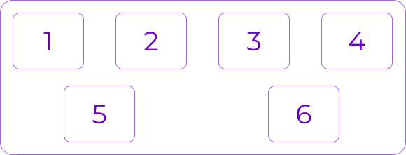
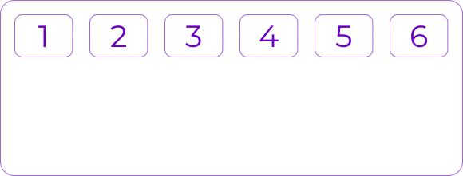
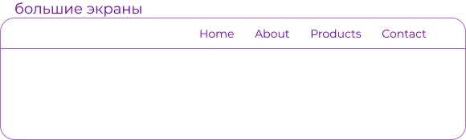
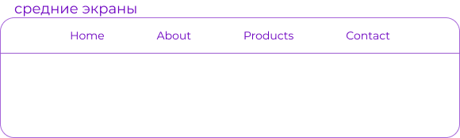
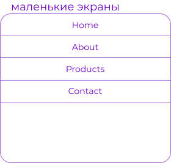

Уроки
Часть 5: Примеры
Давайте начнем с очень простого примера, решающего почти ежедневную проблему: идеальное центрирование. Самое простое решение для этой задачи — это использовать flexbox.
.parent {
display: flex;
height: 300px; /* Или что угодно */
}
.child {
width: 100px; /* Или что угодно */
height: 100px; /* Или что угодно */
margin: auto; /* Магия! */
}
Так происходит благодаря тому, что свойство вертикального выравнивания margin установленное в auto во flex контейнере, поглощает дополнительное пространство. Таким образом, установка margin в auto сделает объект идеально отцентрированным по обеим осям.
Теперь давайте используем еще несколько свойств. Рассмотрим список из 6 элементов, все с фиксированными размерами, но могут быть и авторазмеры. Мы хотим, чтобы они были равномерно распределены по горизонтальной оси, чтобы при изменении размера браузера все масштабировалось хорошо и без медиа запросов.
.flex-container {
/* Сначала мы создаем flex контекст */
display: flex;
/* Затем мы определяем flex-direction и разрешаем элементам переходить на новые строки
* Запомните, что это то же самое что и:
* flex-direction: row;
* flex-wrap: wrap;
*/
flex-flow: row wrap;
/* Затем мы определяем, как распределяется оставшееся пространство */
justify-content: space-around;
}
Готово. Все остальное — это просто стайлинг.

Если изменить разрешение экрана ли масштаб, то будет так:

Давайте попробуем что-нибудь еще. Представьте, что у нас есть выровненные по правому краю элементы навигации в верхней части нашего веб-сайта, но мы хотим, чтобы они были выровнены по ширине на экранах среднего размера и располагались в один столбец на небольших устройствах. Это достаточно просто.
/* Большие экраны */
.navigation {
display: flex;
flex-flow: row wrap;
/* Это выровняет элементы по конечной части линии на главной оси */
justify-content: flex-end;
}
/* Средние экраны */
@media all and (max-width: 800px) {
.navigation {
/* На экранах среднего размера мы центрируем элементы, равномерно распределяя пустое
пространство вокруг элементов */
justify-content: space-around;
}
}
/* Маленькие экраны */
@media all and (max-width: 500px) {
.navigation {
/* На маленьких экранах мы больше не используем направление строки, а используем столбец */
flex-direction: column;
}
}


